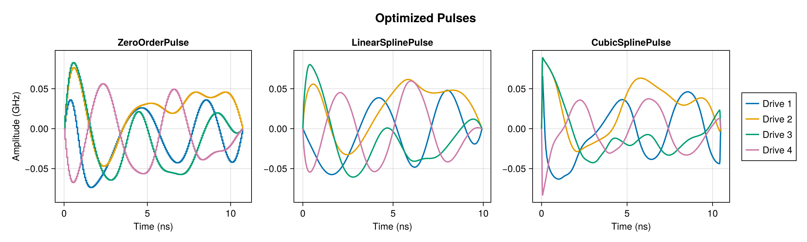
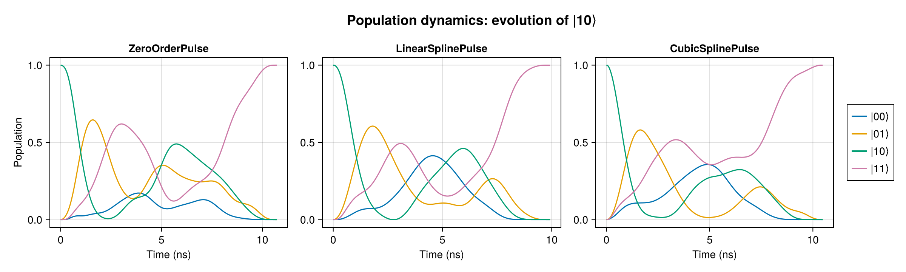

Two-Qubit Gate Validation
This tutorial walks through synthesizing a CNOT gate (Controlled NOT or Controlled X gate) on two coupled transmon qubits using three Pulse types with varying degrees of smoothness (numbers of continuous derivatives).
Furthermore, we validate the fidelities reported by Piccolo.jl when using those pulses by rolling out the same pulses in QuantumToolbox.jl.
Setup
First we import the packages we will use throughout this tutorial.
using Piccolo
using QuantumToolbox
using CairoMakie
using LinearAlgebra
using Printf
using Random
Random.seed!(1234) # For reproducibilityRandom.TaskLocalRNG()Both Piccolo and QuantumToolbox export fidelity. With both packages in scope we write Piccolo.fidelity for Piccolo's trajectory fidelity.
Step 1: Define the Two-Qubit System
The system Hamiltonian for $N$ transmon qubits with pairwise dipole coupling in the rotating frame is
\[H_{\textrm{drift}} = \sum_{i=1}^{N} \left[ (\omega_i - \omega_{\text{frame}})\, a_i^\dagger a_i - \frac{\delta_i}{2}\, a_i^{\dagger 2} a_i^2 \right] + \sum_{i < j} g_{ij} \left( a_i\, a_j^\dagger + a_i^\dagger\, a_j \right),\]
and the control Hamiltonians are
\[H_{\textrm{control}}(t) = \sum_{i=1}^{N} \left[ u_{x,i}(t)(a_i + a_i^\dagger) + u_y(t)i(a_i^\dagger - a_i) \right]\]
where $g_{ij}$ determines the coupling strength between qubits $i$ and $j$.
We could build the drift and control Hamiltonians ourselves and construct the quantum system directly, but we use Piccolo.jl's MultiTransmonSystem constructor to easily build the system.
ωs = [4.0, 4.1] # transmon frequencies (GHz)
δs = [0.2, 0.2] # anharmonicities (GHz) — unused at 2 levels_per_transmon
g = 0.1 # exchange coupling (GHz) — artificially large (see note)
gs = [0.0 g; g 0.0]
sys = MultiTransmonSystem(ωs, δs, gs; levels_per_transmon = 2, drive_bounds = 0.1)CompositeQuantumSystem: levels = 4, n_drives = 4We ignore two best practices to reduce the computational cost of the gate synthesis in this tutorial.
- We only model two levels of each qubit. This reduces the size of the Hilbert space, which reduces the number of decision variables in the NLP optimization.
- The coupling between the qubits is artificially high, which greatly reduces the pulse duration needed to synthesize the gate with high fidelity.
When synthesizing a gate for real hardware, at least 3 levels should be modeled for each qubit in order to suppress leakage to excited states outside of the computational subspace. Additionally, $g$ will be in the 1-10 MHz range, which will require a much longer gate duration.
Step 2: Define the Gate
Our target is the CNOT gate. Piccolo already defines this gate in GATES[:CX]. Because we only model two levels per qubit, we could use GATES[:CX] as our gate directly, but we will use an EmbeddedOperator to place the gate in the system's Hilbert space and record the indices of the computational subspace, so that the tutorial is still applicable when levels_per_transmon$\geq 2$.
U_goal = EmbeddedOperator(GATES[:CX], sys)EmbeddedOperator{ComplexF64}(ComplexF64[1.0 + 0.0im 0.0 + 0.0im 0.0 + 0.0im 0.0 + 0.0im; 0.0 + 0.0im 1.0 + 0.0im 0.0 + 0.0im 0.0 + 0.0im; 0.0 + 0.0im 0.0 + 0.0im 0.0 + 0.0im 1.0 + 0.0im; 0.0 + 0.0im 0.0 + 0.0im 1.0 + 0.0im 0.0 + 0.0im], [1, 2, 3, 4], [2, 2])We set a gate duration of $T = 10$ ns. The timestep size $\Delta t$ is left as a free optimization variable, so the optimizer may adjust the total duration slightly. For each pulse type, we use the same number of control parameters (knots).
T = 10.0 # gate duration (ns)
N_params = 200200With $200$ parameters, the spacing of the knots is $\approx 0.05$ ns. This means the width of each constant section of a ZeroOrderPulse is $\approx 0.05$ ns, which may be unrealistic for the arbitrary waveform generators that produce piecewise constant pulses in most quantum hardware.
Step 3: Synthesize the gates
We synthesize the gate using three different types of pulses:
| Pulse type | Problem template | Continuity |
|---|---|---|
ZeroOrderPulse | SmoothPulseProblem | $C^{-1}$ |
LinearSplinePulse | SplinePulseProblem | $C^{0}$ |
CubicSplinePulse | SplinePulseProblem | $C^{1}$ |
The ZeroOrderPulse type implements piecewise-constant pulses. Although piecewise-constant pulses are unrealistic for hardware platforms which require smooth pulses, they are highly computationally efficient because the dynamics constraints in the gate synthesis optimization are exact across each constant interval $[t_{k}, t_{k+1}]$, and computed efficiently via Krylov subspace methods.
For these reasons, we first optimize the ZeroOrderPulse. Then we convert the optimized pulse to the more realistic LinearSplinePulse and use that as a warm start for another pulse optimization. Finally, we convert the result of that optimization to a CubicSplinePulse and use that as a warm start for our final pulse optimization.
ZeroOrderPulse is not smooth in the mathematical sense, but placing a penalty on the magnitude of the amplitude change between constant regions can reduce the size of the discontinuities.
Piecewise-Constant Pulse
We start from a random piecewise-constant pulse with N_params amplitudes. Because the ZeroOrderPulse dynamics are exact on each constant interval, the number of amplitudes is also the number of optimization timesteps.
times_zoh = collect(range(0, T, length = N_params))
pulse_zoh = ZeroOrderPulse(0.02 * randn(sys.n_drives, N_params), times_zoh)
qtraj_zoh = UnitaryTrajectory(sys, pulse_zoh, U_goal)
qcp_zoh = SmoothPulseProblem(
qtraj_zoh,
N_params;
Q = 100.0,
R = 1e-2,
ddu_bound = 1.0,
piccolo_options = PiccoloOptions(timesteps_all_equal = true),
)
solve!(qcp_zoh; max_iter = 150)constructing SmoothPulseProblem [UnitaryTrajectory]
┌ Warning: Trajectory has timestep variable :Δt but no bounds on it.
│ Adding default lower bound of 0 to prevent negative timesteps.
│
│ Recommended: Add explicit bounds when creating the trajectory:
│ NamedTrajectory(...; Δt_bounds=(min, max))
│ Example:
│ NamedTrajectory(qtraj, N; Δt_bounds=(1e-3, 0.5))
│
│ Or use timesteps_all_equal=true in problem options to fix timesteps.
└ @ DirectTrajOpt.Problems ~/.julia/packages/DirectTrajOpt/TIf6x/src/problems.jl:66
QuantumControlProblem
├─ UnitaryTrajectory · ZeroOrderPulse · BilinearIntegrator, DerivativeIntegrator, DerivativeIntegrator
│
├─ System
│ dim=4 drives=4
│
├─ Trajectory
│ N=200 T=10.000 Δt∈[0, Inf]
│ Ũ⃗ (32) ±[1.0, 1.0, 1.0, … (32 total)] ✓ state
│ Δt ( 1) [0.0, Inf] ✓ timestep
│ t ( 1) · state
│ u ( 4) ±[0.1, 0.1, 0.1, 0.1] ✓ control
│ du ( 4) · control
│ ddu ( 4) ±[1.0, 1.0, 1.0, 1.0] ✓ control
│
├─ Goal
│ EmbeddedOperator on [2, 2], subspace dim 4
│
├─ Objective total = 66.01 @ current x
│ KnotPointObjective w=1 61.83
│ QuadraticRegularizer(:u) w=1 4.554e-06
│ QuadraticRegularizer(:du) w=1 3.549e-03
│ QuadraticRegularizer(:ddu) w=1 4.177
│ NullObjective w=1 0
│
├─ Constraints 1/14 violated at x₀
│ [dyn] BilinearIntegrator ✗ (‖c‖∞ = 0.01793)
│ [dyn] DerivativeIntegrator ✓ (‖c‖∞ = 6.939e-18)
│ [dyn] DerivativeIntegrator ✓ (‖c‖∞ = 4.441e-16)
│ [ineq] AllEqualConstraint ✓ (no eval)
│ [eq] EqualityConstraint ✓ (no eval)
│ [eq] EqualityConstraint ✓ (no eval)
│ [eq] EqualityConstraint ✓ (no eval)
│ [bnd] BoundsConstraint ✓
│ [bnd] BoundsConstraint ✓
│ [bnd] BoundsConstraint ✓
│ [bnd] BoundsConstraint ✓
│ [bnd] BoundsConstraint ✓
│ [eq] TimeConsistencyConstraint ✓ (no eval)
│ [eq] EqualityConstraint ✓ (no eval)
│
└─ Status
variables: 9200 (8000 bounded)
equality: 1584045
inequality: 1
F (raw) = 0.381726
Hint: show_problem(qcp; detail=:full) for pulse plot + sparsity
******************************************************************************
This program contains Ipopt, a library for large-scale nonlinear optimization.
Ipopt is released as open source code under the Eclipse Public License (EPL).
For more information visit https://github.com/coin-or/Ipopt
******************************************************************************
This is Ipopt version 3.14.19, running with linear solver MUMPS 5.8.2.
Number of nonzeros in equality constraint Jacobian...: 731674
Number of nonzeros in inequality constraint Jacobian.: 0
Number of nonzeros in Lagrangian Hessian.............: 634184
Total number of variables............................: 9159
variables with only lower bounds: 200
variables with lower and upper bounds: 7960
variables with only upper bounds: 0
Total number of equality constraints.................: 8358
Total number of inequality constraints...............: 0
inequality constraints with only lower bounds: 0
inequality constraints with lower and upper bounds: 0
inequality constraints with only upper bounds: 0
iter objective inf_pr inf_du lg(mu) ||d|| lg(rg) alpha_du alpha_pr ls
0 6.1840514e+01 3.43e+00 1.55e-01 0.0 0.00e+00 - 0.00e+00 0.00e+00 0
1 6.1566160e+01 1.31e+00 3.43e+02 -0.5 2.12e+00 - 1.51e-01 6.17e-01f 1
2 6.4906835e+01 5.35e-02 4.70e+02 -0.4 7.09e-01 2.0 1.00e+00 9.59e-01f 1
3 6.5092261e+01 5.31e-04 5.57e+01 -0.8 4.45e-02 1.5 1.00e+00 9.90e-01f 1
4 6.4690252e+01 1.40e-05 6.48e+01 -1.7 1.62e-02 1.0 9.92e-01 9.96e-01f 1
⋮
146 3.0500737e-04 1.56e-09 7.07e+01 -6.1 6.60e-04 -1.7 1.00e+00 1.00e+00h 1
147 3.0502977e-04 6.66e-15 3.61e-05 -6.1 5.98e-07 1.5 1.00e+00 1.00e+00h 1
148 3.0504983e-04 2.24e-12 6.74e-05 -4.0 7.14e-06 1.0 1.00e+00 1.00e+00h 1
149 3.0510988e-04 3.88e-12 4.41e-05 -4.1 1.40e-05 0.5 1.00e+00 1.00e+00h 1
iter objective inf_pr inf_du lg(mu) ||d|| lg(rg) alpha_du alpha_pr ls
150 3.0500403e-04 6.31e-12 1.69e-05 -6.1 1.61e-05 0.0 1.00e+00 1.00e+00h 1
Number of Iterations....: 150
(scaled) (unscaled)
Objective...............: 3.0500403458638941e-04 3.0500403458638941e-04
Dual infeasibility......: 1.6868919344923314e-05 1.6868919344923314e-05
Constraint violation....: 6.3075100698029019e-12 6.3075100698029019e-12
Variable bound violation: 0.0000000000000000e+00 0.0000000000000000e+00
Complementarity.........: 7.1761817791730502e-07 7.1761817791730502e-07
Overall NLP error.......: 9.9288034528867384e-05 9.9288034528867384e-05
Number of objective function evaluations = 271
Number of objective gradient evaluations = 151
Number of equality constraint evaluations = 271
Number of inequality constraint evaluations = 0
Number of equality constraint Jacobian evaluations = 151
Number of inequality constraint Jacobian evaluations = 0
Number of Lagrangian Hessian evaluations = 150
Total seconds in IPOPT = 1436.035
EXIT: Maximum Number of Iterations Exceeded.
[ Info: Loaded cached trajectory from two_qubit_zoh_57a874f.jld2F_zoh_piccolo = Piccolo.fidelity(qcp_zoh)0.9999999568450484Linear Spline
Next we optimize a piecewise-linear control pulse, whose control parameters are the pulse values at the edges of each linear interval.
We use the results from the previous optimization to set up a warm start. LinearSplinePulse pulls the control parameters directly from ZeroOrderPulse to build a similar pulse shape (with the same duration, which has been optimized from the intial duration).
zoh_traj = get_trajectory(qcp_zoh)
pulse_lin = LinearSplinePulse(zoh_traj)
qtraj_lin = UnitaryTrajectory(sys, pulse_lin, U_goal)UnitaryTrajectory
system: 4-level CompositeQuantumSystem
drives: LinearSplinePulse with 4 drives
duration: 10.718064748667928We now perform the optimization.
N_timesteps_lin = N_params
qcp_lin = SplinePulseProblem(
qtraj_lin,
N_timesteps_lin;
Q = 100.0,
R_du = 0.1,
piccolo_options = PiccoloOptions(timesteps_all_equal = true),
)
solve!(qcp_lin; max_iter = 80)constructing SplinePulseProblem [UnitaryTrajectory / LinearSplinePulse]
┌ Warning: Trajectory has timestep variable :Δt but no bounds on it.
│ Adding default lower bound of 0 to prevent negative timesteps.
│
│ Recommended: Add explicit bounds when creating the trajectory:
│ NamedTrajectory(...; Δt_bounds=(min, max))
│ Example:
│ NamedTrajectory(qtraj, N; Δt_bounds=(1e-3, 0.5))
│
│ Or use timesteps_all_equal=true in problem options to fix timesteps.
└ @ DirectTrajOpt.Problems ~/.julia/packages/DirectTrajOpt/TIf6x/src/problems.jl:66
QuantumControlProblem
├─ UnitaryTrajectory · LinearSplinePulse · BilinearIntegrator, DerivativeIntegrator
│
├─ System
│ dim=4 drives=4
│
├─ Trajectory
│ N=200 T=10.718 Δt∈[0, Inf]
│ Ũ⃗ (32) ±[1.0, 1.0, 1.0, … (32 total)] ✓ state
│ Δt ( 1) [0.0, Inf] ✓ timestep
│ t ( 1) · state
│ u ( 4) ±[0.1, 0.1, 0.1, 0.1] ✓ control
│ du ( 4) · control
│
├─ Goal
│ EmbeddedOperator on [2, 2], subspace dim 4
│
├─ Objective total = 0.02287 @ current x
│ KnotPointObjective w=1 0.02243
│ QuadraticRegularizer(:u) w=1 1.603e-05
│ QuadraticRegularizer(:du) w=1 4.227e-04
│ NullObjective w=1 0
│
├─ Constraints 1/11 violated at x₀
│ [dyn] BilinearIntegrator ✗ (‖c‖∞ = 5.426e-03)
│ [dyn] DerivativeIntegrator ✓ (‖c‖∞ = 1.735e-18)
│ [ineq] AllEqualConstraint ✓ (no eval)
│ [eq] EqualityConstraint ✓ (no eval)
│ [eq] EqualityConstraint ✓ (no eval)
│ [eq] EqualityConstraint ✓ (no eval)
│ [bnd] BoundsConstraint ✓
│ [bnd] BoundsConstraint ✓
│ [bnd] BoundsConstraint ✓
│ [eq] TimeConsistencyConstraint ✓ (no eval)
│ [eq] EqualityConstraint ✓ (no eval)
│
└─ Status
variables: 8400 (7200 bounded)
equality: 1425641
inequality: 1
F (raw) = 0.999776
Hint: show_problem(qcp; detail=:full) for pulse plot + sparsity
******************************************************************************
This program contains Ipopt, a library for large-scale nonlinear optimization.
Ipopt is released as open source code under the Eclipse Public License (EPL).
For more information visit https://github.com/coin-or/Ipopt
******************************************************************************
This is Ipopt version 3.14.19, running with linear solver MUMPS 5.8.2.
Number of nonzeros in equality constraint Jacobian...: 601294
Number of nonzeros in inequality constraint Jacobian.: 0
Number of nonzeros in Lagrangian Hessian.............: 528864
Total number of variables............................: 8359
variables with only lower bounds: 200
variables with lower and upper bounds: 7160
variables with only upper bounds: 0
Total number of equality constraints.................: 7562
Total number of inequality constraints...............: 0
inequality constraints with only lower bounds: 0
inequality constraints with lower and upper bounds: 0
inequality constraints with only upper bounds: 0
iter objective inf_pr inf_du lg(mu) ||d|| lg(rg) alpha_du alpha_pr ls
0 2.2869335e-02 1.00e-02 9.61e-02 0.0 0.00e+00 - 0.00e+00 0.00e+00 0
1 9.4980918e-02 5.02e-04 7.08e+01 -1.4 6.88e-01 - 9.94e-01 9.90e-01h 1
2 2.3034818e-02 9.12e-06 7.01e+01 -2.1 3.44e-02 0.0 9.99e-01 9.90e-01h 1
3 2.4614962e-02 1.13e-07 1.73e-01 -4.0 1.84e-03 1.3 1.00e+00 1.00e+00h 1
4 2.1136548e-02 7.76e-08 1.02e-02 -4.0 1.43e-03 0.9 1.00e+00 1.00e+00h 1
⋮
76 4.2461244e-04 2.52e-10 1.26e-03 -4.0 1.71e-04 0.9 1.00e+00 1.00e+00h 1
77 4.0052428e-04 1.55e-09 1.26e-03 -4.0 5.12e-04 0.4 1.00e+00 1.00e+00h 1
78 3.6037667e-04 5.77e-09 1.26e-03 -4.0 1.53e-03 -0.1 1.00e+00 1.00e+00h 1
79 3.4790701e-04 4.99e-08 7.07e+01 -4.0 4.58e-03 -0.6 1.00e+00 1.00e+00h 1
iter objective inf_pr inf_du lg(mu) ||d|| lg(rg) alpha_du alpha_pr ls
80 3.5681520e-04 4.69e-07 7.07e+01 -4.0 1.36e-02 -1.0 1.00e+00 1.00e+00h 1
Number of Iterations....: 80
(scaled) (unscaled)
Objective...............: 3.5681520295048733e-04 3.5681520295048733e-04
Dual infeasibility......: 7.0716465421675409e+01 7.0716465421675409e+01
Constraint violation....: 4.6892933880382515e-07 4.6892933880382515e-07
Variable bound violation: 0.0000000000000000e+00 0.0000000000000000e+00
Complementarity.........: 1.0000000000000005e-04 1.0000000000000005e-04
Overall NLP error.......: 7.0716465421675409e+01 7.0716465421675409e+01
Number of objective function evaluations = 82
Number of objective gradient evaluations = 81
Number of equality constraint evaluations = 82
Number of inequality constraint evaluations = 0
Number of equality constraint Jacobian evaluations = 81
Number of inequality constraint Jacobian evaluations = 0
Number of Lagrangian Hessian evaluations = 80
Total seconds in IPOPT = 574.959
EXIT: Maximum Number of Iterations Exceeded.
[ Info: Loaded cached trajectory from two_qubit_linear_spline_57a874f.jld2The discretized dynamics constraints of the optimizer are not exact when the control pulses are not piecewise-constant. Consequently, the number of timesteps may need to be increased, depending the degree of physical accuracy needed. If the discretized dynamics are not accurate, the optimizer may maximize the fidelity for the discretized dynamics, while the actual fidelity for the real, continuous-time dynamics is not as good.
F_lin_piccolo = Piccolo.fidelity(qcp_lin)0.9998080281476094Cubic Spline
Next we optimize a cubic spline control pulse, whose control parameters are the pulse's value and the slope of the tangent line at several points in time.
We use the results from the previous optimization to set up a warm start. From the LinearSplinePulse, we use the knot values as our pulse values, and set the initial slope of the tangent line at those points to be zero.
lin_traj = get_trajectory(qcp_lin)
pulse_cub = CubicSplinePulse(lin_traj[:u], zero(lin_traj[:u]), get_times(lin_traj))
qtraj_cub = UnitaryTrajectory(sys, pulse_cub, U_goal)UnitaryTrajectory
system: 4-level CompositeQuantumSystem
drives: CubicSplinePulse with 4 drives
duration: 9.92763701979117We now perform the optimization, again noting that the number of timesteps may need to be adjusted for greater physical accuracy.
N_timesteps_cub = N_params
qcp_cub = SplinePulseProblem(
qtraj_cub,
N_timesteps_cub;
Q = 100.0,
R_du = 0.1,
piccolo_options = PiccoloOptions(timesteps_all_equal = true),
)
solve!(qcp_cub; max_iter = 80)constructing SplinePulseProblem [UnitaryTrajectory / CubicSplinePulse]
┌ Warning: Trajectory has timestep variable :Δt but no bounds on it.
│ Adding default lower bound of 0 to prevent negative timesteps.
│
│ Recommended: Add explicit bounds when creating the trajectory:
│ NamedTrajectory(...; Δt_bounds=(min, max))
│ Example:
│ NamedTrajectory(qtraj, N; Δt_bounds=(1e-3, 0.5))
│
│ Or use timesteps_all_equal=true in problem options to fix timesteps.
└ @ DirectTrajOpt.Problems ~/.julia/packages/DirectTrajOpt/TIf6x/src/problems.jl:66
QuantumControlProblem
├─ UnitaryTrajectory · CubicSplinePulse · BilinearIntegrator
│
├─ System
│ dim=4 drives=4
│
├─ Trajectory
│ N=200 T=9.928 Δt∈[0, Inf]
│ Ũ⃗ (32) ±[1.0, 1.0, 1.0, … (32 total)] ✓ state
│ Δt ( 1) [0.0, Inf] ✓ timestep
│ t ( 1) · state
│ u ( 4) ±[0.1, 0.1, 0.1, 0.1] ✓ control
│ du ( 4) · control
│
├─ Goal
│ EmbeddedOperator on [2, 2], subspace dim 4
│
├─ Objective total = 0.01931 @ current x
│ KnotPointObjective w=1 0.01931
│ QuadraticRegularizer(:u) w=1 0
│ QuadraticRegularizer(:du) w=1 0
│ NullObjective w=1 0
│
├─ Constraints 1/13 violated at x₀
│ [dyn] BilinearIntegrator ✗ (‖c‖∞ = 8.458e-03)
│ [ineq] AllEqualConstraint ✓ (no eval)
│ [eq] EqualityConstraint ✓ (no eval)
│ [eq] EqualityConstraint ✓ (no eval)
│ [eq] EqualityConstraint ✓ (no eval)
│ [eq] EqualityConstraint ✓ (no eval)
│ [eq] EqualityConstraint ✓ (no eval)
│ [bnd] BoundsConstraint ✓
│ [bnd] BoundsConstraint ✓
│ [bnd] BoundsConstraint ✓
│ [bnd] BoundsConstraint ✓
│ [eq] TimeConsistencyConstraint ✓ (no eval)
│ [eq] EqualityConstraint ✓ (no eval)
│
└─ Status
variables: 8400 (7200 bounded)
equality: 1267239
inequality: 1
F (raw) = 0.999807
Hint: show_problem(qcp; detail=:full) for pulse plot + sparsity
******************************************************************************
This program contains Ipopt, a library for large-scale nonlinear optimization.
Ipopt is released as open source code under the Eclipse Public License (EPL).
For more information visit https://github.com/coin-or/Ipopt
******************************************************************************
This is Ipopt version 3.14.19, running with linear solver MUMPS 5.8.2.
Number of nonzeros in equality constraint Jacobian...: 534338
Number of nonzeros in inequality constraint Jacobian.: 0
Number of nonzeros in Lagrangian Hessian.............: 528368
Total number of variables............................: 8351
variables with only lower bounds: 200
variables with lower and upper bounds: 7160
variables with only upper bounds: 0
Total number of equality constraints.................: 6766
Total number of inequality constraints...............: 0
inequality constraints with only lower bounds: 0
inequality constraints with lower and upper bounds: 0
inequality constraints with only upper bounds: 0
iter objective inf_pr inf_du lg(mu) ||d|| lg(rg) alpha_du alpha_pr ls
0 1.9319015e-02 1.00e-02 1.86e-01 0.0 0.00e+00 - 0.00e+00 0.00e+00 0
1 1.7401042e-02 1.00e-04 1.56e-01 -4.0 1.14e-02 - 9.11e-01 9.90e-01h 1
2 6.0430604e-03 3.14e-05 7.07e+01 -3.1 1.55e-02 - 9.90e-01 9.90e-01h 1
3 1.0284741e-03 1.79e-07 7.07e+01 -4.0 7.55e-04 0.0 1.00e+00 1.00e+00h 1
4 1.0771613e-03 1.77e-10 4.04e-03 -4.0 3.56e-05 2.2 1.00e+00 1.00e+00h 1
⋮
76 1.3950418e-05 7.17e-12 6.45e-04 -4.1 6.77e-06 2.2 1.00e+00 1.00e+00h 1
77 1.3819740e-05 5.04e-11 8.89e-04 -6.1 1.70e-05 1.7 1.00e+00 1.00e+00h 1
78 1.3627283e-05 1.28e-10 4.41e-04 -6.1 2.52e-05 1.2 1.00e+00 1.00e+00h 1
79 1.3366401e-05 1.35e-10 1.19e-04 -6.1 2.05e-05 0.8 1.00e+00 1.00e+00h 1
iter objective inf_pr inf_du lg(mu) ||d|| lg(rg) alpha_du alpha_pr ls
80 1.3248726e-05 1.31e-10 9.32e-05 -4.0 4.66e-05 0.3 1.00e+00 1.00e+00h 1
Number of Iterations....: 80
(scaled) (unscaled)
Objective...............: 1.3248725550169977e-05 1.3248725550169977e-05
Dual infeasibility......: 9.3182429959350055e-05 9.3182429959350055e-05
Constraint violation....: 1.3095724504808004e-10 1.3095724504808004e-10
Variable bound violation: 0.0000000000000000e+00 0.0000000000000000e+00
Complementarity.........: 1.0044152211215388e-04 1.0044152211215388e-04
Overall NLP error.......: 9.3182429959350055e-05 9.3182429959350055e-05
Number of objective function evaluations = 236
Number of objective gradient evaluations = 81
Number of equality constraint evaluations = 236
Number of inequality constraint evaluations = 0
Number of equality constraint Jacobian evaluations = 81
Number of inequality constraint Jacobian evaluations = 0
Number of Lagrangian Hessian evaluations = 80
Total seconds in IPOPT = 585.144
EXIT: Maximum Number of Iterations Exceeded.
[ Info: Loaded cached trajectory from two_qubit_cubic_spline_57a874f.jld2F_cub_piccolo = Piccolo.fidelity(qcp_cub)0.999783918076159Visualizing the Optimized Pulses
Finally, we visualize the optimized pulses side by side.
let
optimized = [
("ZeroOrderPulse", get_pulse(qcp_zoh.qtraj)),
("LinearSplinePulse", get_pulse(qcp_lin.qtraj)),
("CubicSplinePulse", get_pulse(qcp_cub.qtraj)),
]
colors = Makie.wong_colors()[1:sys.n_drives]
fig = Figure(size = (1200, 360))
axes = map(enumerate(optimized)) do (col, (name, pulse))
ax = Axis(
fig[1, col];
title = name,
xlabel = "Time (ns)",
ylabel = col == 1 ? "Amplitude (GHz)" : "",
)
plot_pulse!(ax, pulse; colors, show_knots = false)
ax
end
linkyaxes!(axes...)
entries = [LineElement(; color = colors[i], linewidth = 2) for i = 1:sys.n_drives]
Legend(fig[1, length(optimized)+1], entries, ["Drive $i" for i = 1:sys.n_drives])
Label(fig[0, :], "Optimized Pulses"; font = :bold, fontsize = 18)
fig
end
Step 4: Validate Pulses
Because the discretized dynamics used by the optimizer are not exact for the LinearSplinePulse and CubicSplinePulse, it is important to validate that the reported fidelities are accurate. We can do this using QuantumToolbox.jl.
Helper Functions
Piccolo ships a rollout_with_qutip(system, pulse, ψ0) helper in its PiccoloQuantumToolboxExt extension, which loads once both QuantumToolbox and a Makie backend are in scope. Given a system, a pulse, and an initial condition, it allows us to compute solution to the system of ODEs (Schrodinger's equation or the Linlad master equation).
The following function uses rollout_with_qutip to roll out each initial condition from the computational basis states and collect them into the columns of U_impl (and stores the solutions for later plotting).
function unitary_from_qutip(sys, pulse, U_goal; n_save = 200)
subspace = U_goal.subspace
d = length(subspace)
U_impl = zeros(ComplexF64, d, d)
sols = Vector{Any}(undef, d)
for (col, idx) in enumerate(subspace)
ψ0 = ComplexF64.(1:sys.levels .== idx)
sol = rollout_with_qutip(sys, pulse, ψ0; n_save)
sols[col] = sol
U_impl[:, col] = sol.states[end].data[subspace]
end
return U_impl, sols
endunitary_from_qutip (generic function with 1 method)We finally make a function for computing the fidelity using the QuantumToolbox rollout.
\[F = \frac{\left|\operatorname{tr}\!\left(U_\text{goal}^\dagger\, U_\text{impl}\right)\right|^2}{d^2}\]
function gate_fidelity_qutip(sys, pulse, U_goal; kwargs...)
U_impl, _ = unitary_from_qutip(sys, pulse, U_goal; kwargs...)
sub = U_goal.subspace
U_target = U_goal.operator[sub, sub]
d = length(sub)
return abs2(tr(U_target' * U_impl)) / d^2
endgate_fidelity_qutip (generic function with 1 method)Compute Fidelities with Quantum Toolbox
With our helper functions in place, we can compute the fidelities using QuantumToolbox.
F_zoh_qutip = gate_fidelity_qutip(sys, get_pulse(qcp_zoh.qtraj), U_goal)
F_lin_qutip = gate_fidelity_qutip(sys, get_pulse(qcp_lin.qtraj), U_goal)
F_cub_qutip = gate_fidelity_qutip(sys, get_pulse(qcp_cub.qtraj), U_goal)
F_zoh_qutip, F_lin_qutip, F_cub_qutip(0.9999999983058024, 0.9997600338359514, 0.9997298942310923)We collect the fidelities into a comparison table to confirm that all three parameterizations reach the target and agree with QuantumToolbox.
results = [
("ZeroOrderPulse", N_params, F_zoh_piccolo, F_zoh_qutip),
("LinearSplinePulse", N_params, F_lin_piccolo, F_lin_qutip),
("CubicSplinePulse", N_params, F_cub_piccolo, F_cub_qutip),
]3-element Vector{Tuple{String, Int64, Float64, Float64}}:
("ZeroOrderPulse", 200, 0.9999999568450484, 0.9999999983058024)
("LinearSplinePulse", 200, 0.9998080281476094, 0.9997600338359514)
("CubicSplinePulse", 200, 0.999783918076159, 0.9997298942310923)We now summarize the results for each pulse type:
println(
@sprintf(
"%-18s %5s %11s %11s %10s",
"Pulse type",
"N",
"F Piccolo",
"F QuTiP",
"pic−q"
)
)
for (name, n, fd, fq) in results
println(@sprintf("%-18s %5d %11.7f %11.7f %10.2e", name, n, fd, fq, fd - fq))
end
for (name, _, fd, fq) in results
@assert fd ≥ 0.999 "$name: fidelity $fd below 0.999 target"
@assert abs(fd - fq) ≤ 1e-4 "$name: |F_Piccolo - F_QuTiP| = $(abs(fd - fq)) exceeds 1e-4"
end
println("All parameterizations reach ≥ 0.999 and agree with QuantumToolbox to ≤ 1e-4.")Pulse type N F Piccolo F QuTiP pic−q
ZeroOrderPulse 200 1.0000000 1.0000000 -4.15e-08
LinearSplinePulse 200 0.9998080 0.9997600 4.80e-05
CubicSplinePulse 200 0.9997839 0.9997299 5.40e-05
All parameterizations reach ≥ 0.999 and agree with QuantumToolbox to ≤ 1e-4.We see that all pulses synthesize the CNOT gate with $\geq 99.9$ % fidelity, and that the reported fidelity agrees with the rollout fidelity computed with QuantumToolbox. The fidelities reported by Piccolo for ZeroOrderPulse match the rollout fidelities reported by QuantumToolbox more closely than for any of the other pulses types. This is because the discretized dynamics used in the optimization are exact for ZeroOrderPulse.
Step 5: Visualizing Population Dynamics
Finally, we visualize the population dynamics for each pulse type, side by side. The CNOT gate flips the target qubit when the control qubit is excited: $|10\rangle \to |11\rangle$. We plot the evolution of the computational-state populations starting from the initial condition $|10\rangle$, using QuantumToolbox's rollout of the dynamics.
basis_labels = ["|00⟩", "|01⟩", "|10⟩", "|11⟩"]
sub = U_goal.subspace
let
rollouts = [
("ZeroOrderPulse", get_pulse(qcp_zoh.qtraj)),
("LinearSplinePulse", get_pulse(qcp_lin.qtraj)),
("CubicSplinePulse", get_pulse(qcp_cub.qtraj)),
]
colors = Makie.wong_colors()[1:length(sub)]
fig = Figure(size = (1200, 360))
axes = map(enumerate(rollouts)) do (col, (name, pulse))
_, sols = unitary_from_qutip(sys, pulse, U_goal)
sol_10 = sols[3] # |10⟩ input
tlist = sol_10.times
populations =
[abs2.(getindex.(getfield.(sol_10.states, :data), j)) for j in sub]
ax = Axis(
fig[1, col];
title = name,
xlabel = "Time (ns)",
ylabel = col == 1 ? "Population" : "",
)
for (j, population) in enumerate(populations)
lines!(ax, collect(tlist), population; color = colors[j])
end
ax
end
linkyaxes!(axes...)
entries = [LineElement(; color = colors[j], linewidth = 2) for j = 1:length(sub)]
Legend(fig[1, length(rollouts)+1], entries, basis_labels)
Label(fig[0, :], "Population dynamics: evolution of |10⟩"; font = :bold, fontsize = 18)
fig
end
This page was generated using Literate.jl.